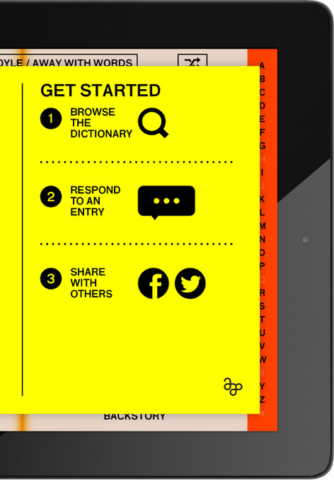
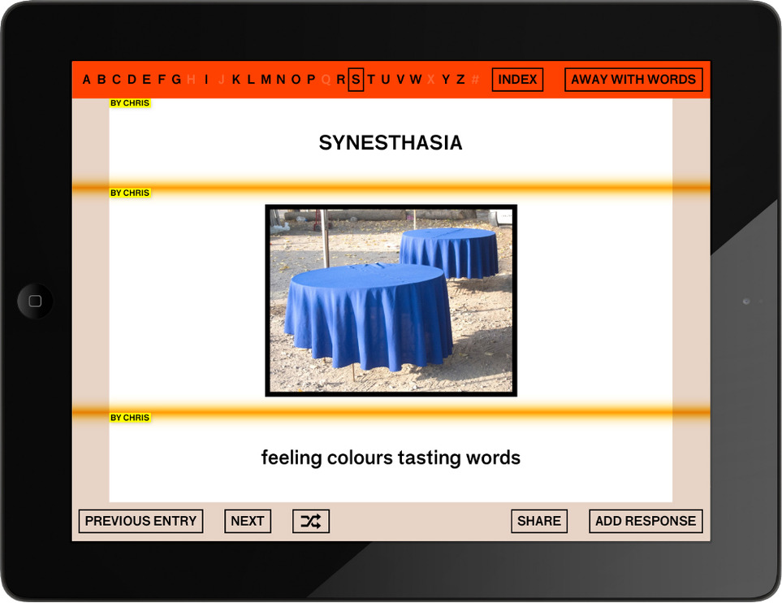
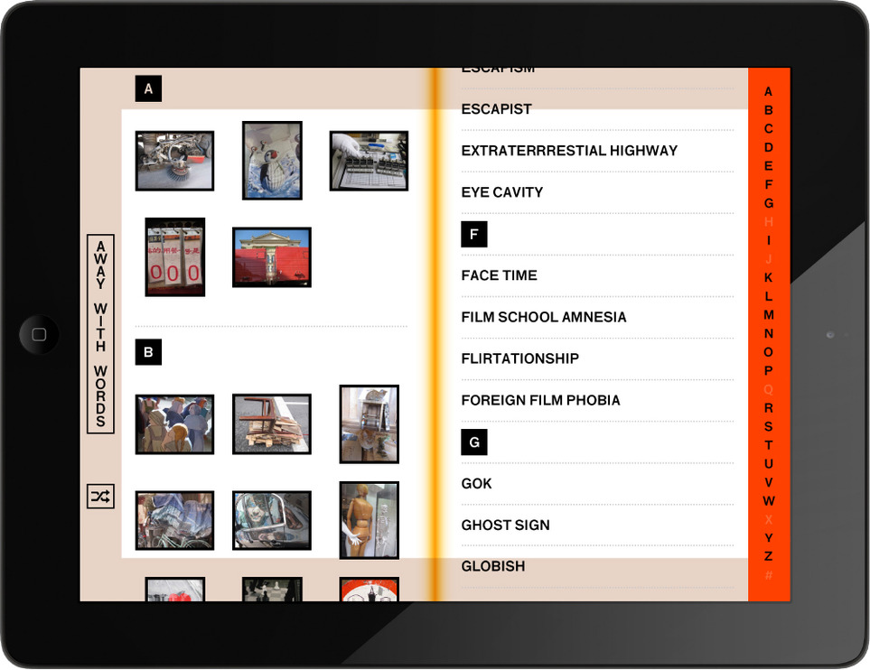

Linked By Air




Away With Words
Medium: Mobile
Client:ArtAsiaPacific
Year:2013
The Away With Words app for iPad and iPhone is award-winning cinematographer Christopher Doyle’s celebration of how words and images collide to form new, often ironic associations. In this app, texts provide free associations, rather than definitions, inspired by found images. Users are encouraged to make their own associations with Chris’s street photographs, by attaching new words and images to existing ones.
The app works offline so you can use it on the train, and whenever you have a connection it downloads the latest images and meanings from Chris and other users as you browse them. Optionally get notifications whenever Chris adds new photos. Share your favorite entries on Facebook or Twitter. It’s a fun way to explore Chris’s work as a codex, and by letting users see through Chris’s eyes the app aims to inspire them to see their city in a more participatory way. Users can then act on that inspiration by adding their own photos or redefining Chris’s, or simply by exploring their city.